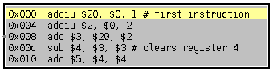

| Library: | Input/Output |
| Introduced: | 3.x.x |
| Appearance: |  |
Displays arbitrary lines of text from a file, with one line hilighted depending on the value of the inputs. When the input is n, the File Viewer will scroll to, and highlight, line n of the file. Alternatively, the text file can contain address labels (a number in decimal or hex at the start of each line, followed by a ":"), and the File Viewer will scroll to, and highlight, whichever line has address n.
This component is particularly useful for building and simulating CPUs in Logisim. By placing a File Viewer component into the circuit and loading the text of the assembly-language program being executed elsewhere in the simulator, and sending the program counter to the File Viewer where it is used to select the line number of the file to hilight, the user can follow the program's progress line by line. Similarly, if we send the current opcode from a circuit to a File Viewer that is configured with a list of all opcode mnemonics, the File Viewer will highlight the current opcode's mnemonic, which can be nice for debugging purposes.
There is only one input pin, on the west edge, with bit width matching the value of the 'Address Bit Width' attribute. This input is used to select the current line to highlight.
None.
None.